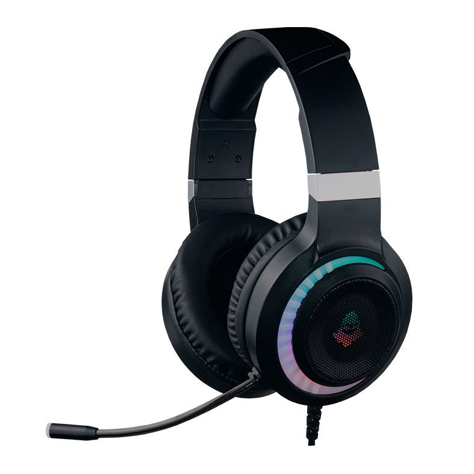
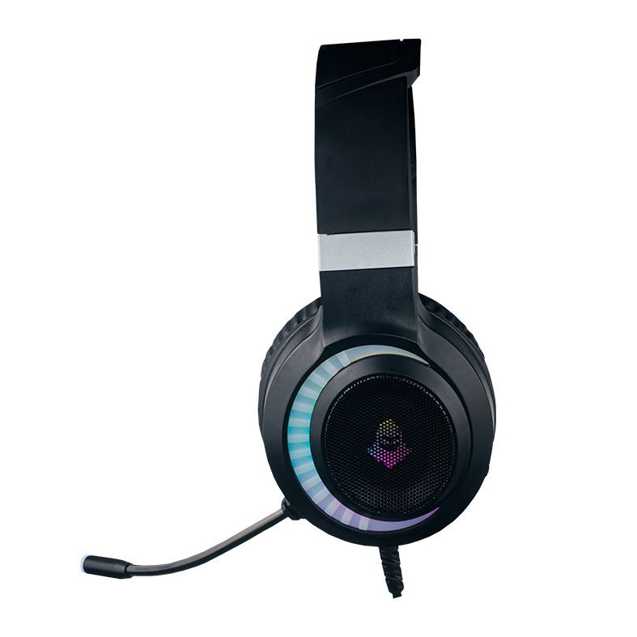
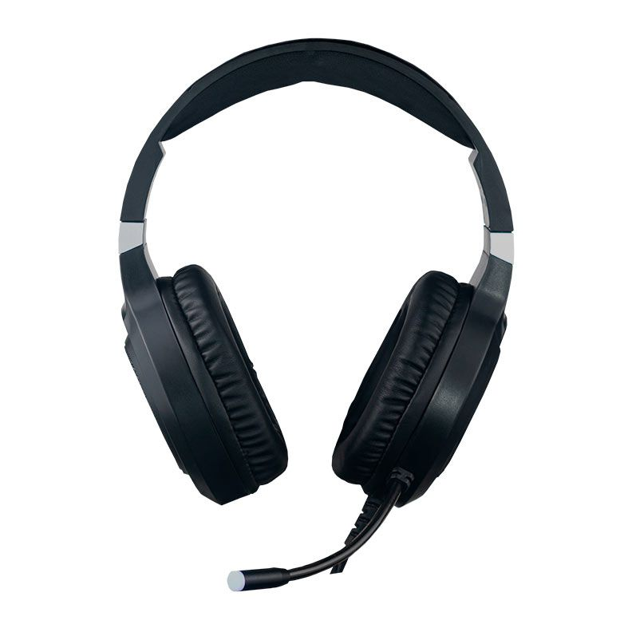

Descrição
- Headset Gamer Mancer Twilight, RGB, Drivers 50mm, Preto, MCR-TLT-RGB02
- Marca: Mancer
- Modelo: MCR-TLT-RGB02
Especificações:
- Bluetooth 5.0
- Funções rádio, cartão de memória e bluetooth
- Iluminação: RGB
- Superfície: ABS
- Microfone: Ajustável

O Fone de Ouvido Headset Gamer Mancer Twilight é muito mais que qualidade sonora! Construído com componentes que priorizam a fidelidade de som e suavização de ruídos. Os potentes alto-falantes possibilitam a melhor resposta e preservação da autenticidade das mídias reproduzidas. Além disso, ele está mais confortável, com construção ergonômica e ajustes de altura e largura que se adequam às linhas naturais das mais diversas características faciais, além de possuir confortáveis áreas almofadadas que proporcionam o uso cômodo por horas.

Descrição
- Frequência: 20Hz – 20KHz
- Impedância: 20 ohm
- Driver: 50mm
- Sensibilidade: 112+/-3db
- Sensibilidade do microfone: 38±3db
- Tamanho do microfone: 10cm
- Tipo de microfone: Ominidirecional
- Tipo de cabo: PVC 2.0 m
- Conectores: USB / 2 x 3.5 mini jack